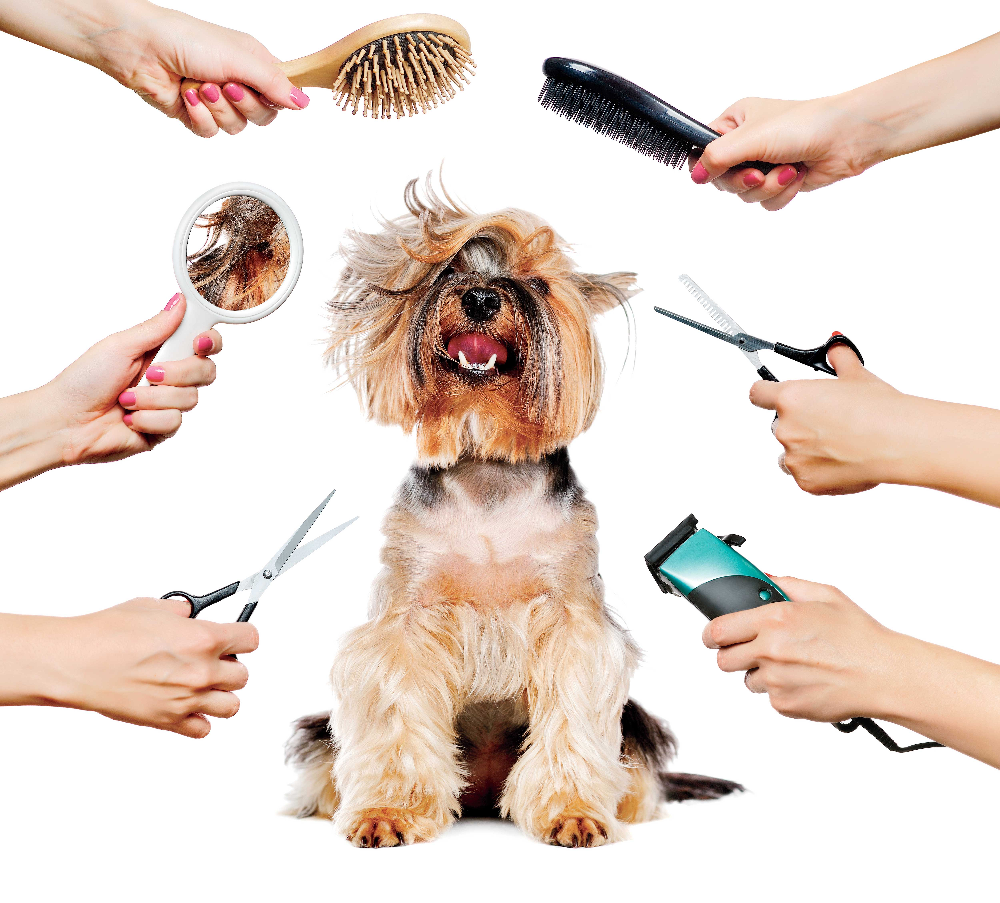

Servicio de Peluquería Canina
Equipo Fundación "CoCo", Gestión 2026

Ofrecemos baño, corte de pelo, limpieza de oídos, corte de uñas y tratamientos especiales para el cuidado del pelaje de tu mascota. Nuestros especialistas trabajan con amor y paciencia para que tu perrito se sienta cómodo.
Más información